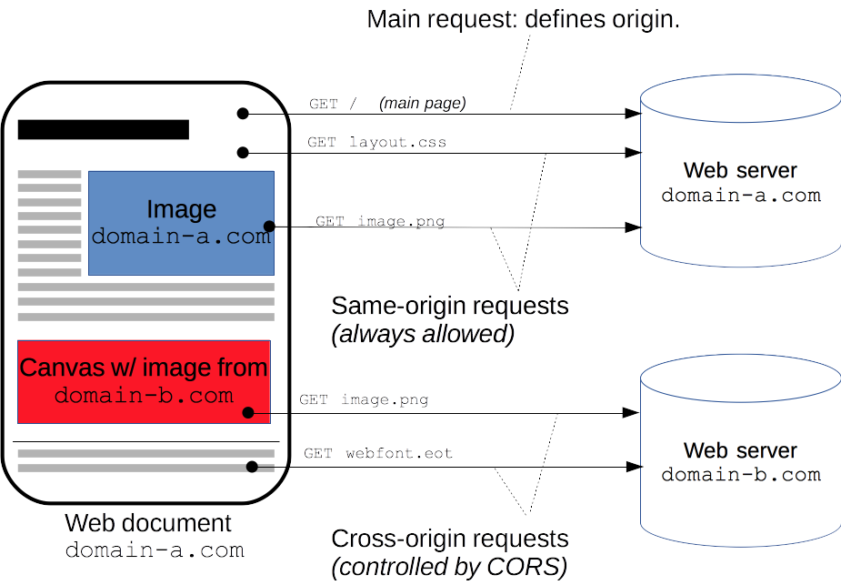

Updated ( 2020-07-15 / 2024-07-13 )
- a web application makes a cross origin request when it make a request to an origin other than its own server
- with CORS we can control:
- on the frontend: to which origins the app is allowed to make requests (and how)
- on the backend: who can access our resources (and how)
- by default (when no CORS headers are specified) a web app only allows to access its own server
- CORS roules are configured through various HTTP request/response headers Access-Control-* [link]
- CORS is enforced only by web browsers (any other networking tool ignores CORS headers), the goal is to prevent XSS (Cross Site Scipting) and CSRF (Cross Site Forgery) attacks
- the frontend app makes a preflight request to its own server in order to 'ask' what 3rd party origins it's allowed to request (and how)
OPTION // a preflight request is an OPTION request Origin:origin // client's origin Access-Control-Request-Headers:httpHeader , ... // headers to include in the cross origin request Access-Control-Request-Method:httpMethod // method to request the cross origin
- a preflight request is made only in certain conditions: